Neural networks normally get their weights from training. Once a transformer is trained, though, it is nothing more than a program written in matrices, so if you know the program you want, you can skip training and write the matrices yourself. People have done this by hand for small problems (related work). Compilers such as Tracr go further, turning short programs into transformer weights automatically. Recently, Weight-Space Programming (Takehi, Teoh, Zhang and Khattab, MIT CSAIL) showed that a frontier LLM can edit a network's weights directly, without any training. Other groups have gone further and had LLMs set every weight of a tiny transformer, though only for toy tasks (Singh, AdderBoard).
We wanted to know whether LLM-written weights hold up on problems that are genuinely hard. Our main test is Maze-Hard, a benchmark of 30×30 mazes whose shortest paths run longer than 110 steps. Frontier LLMs struggle with it. When Claude Opus 5.5 is asked for the shortest path, it gets only 13 of 50 test mazes right (Davis et al., NeurIPS 2026). So instead of asking Claude to solve the mazes, we asked it to build a network that solves them, namely a looped transformer whose every weight Claude sets by hand.
The network Claude wrote is a single transformer layer with 19,936 weights, of which only 922 are not zero. That layer runs in a loop, advancing a shortest-path search by one step on every pass. The looped network solves all 1,000 test mazes. For every maze, it returns the same path the dataset gives as the answer, rather than just some shortest path. Because a bigger maze simply needs more loops, the very same weights also solved all 50 mazes we generated at 60×60 and all 40 at 100×100, even though Claude had checked the network only on 30×30 mazes. The loop is what this post adds to earlier work, since it lets an LLM-written network handle problems that take thousands or even a million steps. We call the approach looped weight-space programming.
What makes this result striking is who wrote the network. Claude itself struggles to carry out a search of more than a hundred steps in text, even when we spell the algorithm out (section 3). Yet it can write a single step of that search into weights, leaving the loop to repeat the step for as long as the maze requires. Programmers rely on the same trick whenever they write code for arithmetic they could not do in their heads.
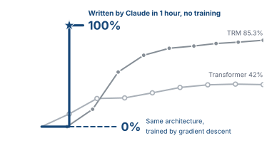
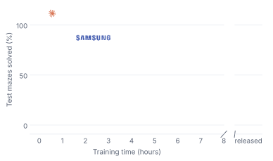
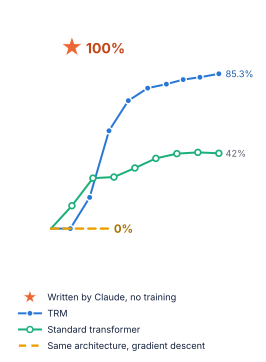
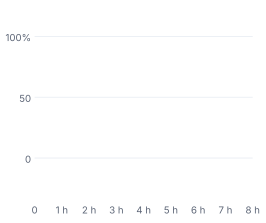
- The approach works far beyond mazes. Claude used the same recipe on other hard tasks. One network solves Sudoku-Extreme by guessing and backtracking. Another plays out all 1,048,575 moves of a 20-disk Tower of Hanoi without a single mistake. A third answers graph questions buried in prompts of up to a million tokens (GraphWalks). Four more solve reasoning tasks from BIG-Bench Hard and BIG-Bench Extra Hard. Every one of these networks scored 100% on its test problems.
- The loop keeps the networks small and lets them scale. Every weight is one more thing Claude has to get right. With a loop, a bigger problem needs more passes rather than more weights, which keeps the maze network 163 times smaller than it would be without one. The same loop lets each network keep working far beyond the sizes Claude checked it on (section 4).
- Gradient descent did not find these solutions in our runs. When we reset the maze network Claude wrote to random weights and trained it on the same 1,000 mazes, every run ended with 0% of mazes solved, on budgets far smaller than those of the models built for this benchmark (section 4).
- Every number inside has a meaning. Claude decided what each number inside a network stands for, so we can read those numbers after any loop and watch the algorithm run, as Figure 2 shows.
Why write weights at all, when Claude could simply write a Python program that searches the maze? Because a program tells us nothing about neural networks. Once the solution sits inside an ordinary transformer, the same kind of network people normally train, we can ask questions that a program cannot answer. Does a network this small already hold a complete solution? And if it does, can training find it?
The rest of this post walks through the maze network in detail, since every other network is built the same way. We then look at why Claude can write the network even though it fails to solve most mazes, whether training can find the same weights, and how the other benchmarks went. The weights and two in-browser demos are public.
1. How the maze network works
To write a transformer by hand, it helps to picture it as a row of tiny computers, one per token. Each computer has a small memory, which is the vector of numbers the transformer carries for that token from layer to layer. In every layer, attention lets each token read from other tokens. The feed-forward neurons then update the token's memory based on what it already held and what it just read. Writing a network therefore comes down to two decisions. You decide what each number in the memory stands for, then you choose weights that make every update do what you intend.
For mazes, Claude made each cell of the maze one token, so a 30×30 maze becomes 900 tokens. Each cell gets a memory of 35 numbers. A few record what the cell is (a wall, the start or the goal) and where it sits in the grid. Others track the search, namely the cell's distance from the goal, which neighbour is its next step, and whether it lies on the path. The remaining 20 serve as scratch space for whatever the cell reads from its neighbours. The network's single layer has four attention heads, each with a single job. One lets every cell read the cell below it, while the other three read the cell to its left, to its right and above it.
With this layout, each pass through the layer performs one step of a standard shortest-path search.
A wave from the goal. The goal starts at distance 0. On every loop, each open cell that has not been reached yet but borders a reached cell takes that neighbour's distance plus one. The reached area therefore spreads outward from the goal one step per loop, like a ripple across a pond.
Counting in threes. Claude kept every number in a cell's memory, apart from its position, as a switch that is either on or off, for a reason explained below. A switch cannot hold a distance like 117, so each cell stores its distance modulo 3 instead, counting 0, 1, 2, 0, 1, 2 and so on. That turns out to be all the search needs. Two reachable cells next to each other differ in distance from the goal by one, so the count modulo 3 is enough to tell which neighbours lie one step closer to the goal. As a bonus, nothing in the network grows with the size of the maze.
Pointers. Once a cell is reached, it points to a neighbour one step closer to the goal, namely the one just behind it in the count. When several neighbours qualify, it picks the first in the fixed order down, left, right, up. This tie-break is how the network returns the dataset's reference path. Claude chose it from 96 candidate rules because it was the only one that reproduced the answers to all 1,000 training mazes, whereas the next best matched 956.
The path. As soon as the wave reaches the start, a path grows out of it one cell per loop, following the pointers all the way to the goal. These cells form the answer.
Snapping back. At the end of every loop, each switch is pushed back to 0 or 1. Any small numerical error is wiped out before the next loop can build on it, which is why the network stays accurate through thousands of loops.
On the first test maze, the wave reaches the start at loop 111. The path then takes another 111 loops to grow, so it is complete at loop 222. The network runs 1,800 loops in total, far more than any test maze needs. Figure 4 draws the numbers every cell holds after each loop.
The layer piece by piece, and what breaks when you switch parts off
Nothing in the network runs as a sequence of instructions. All cells update at the same moment on every loop, each knowing only its own 35 numbers and what it reads from its four neighbours. The path is not computed somewhere else and then written out. Instead, it lights up across the grid one cell per loop, from the start to the goal.
![Diagram of the maze network's one layer. A bar shows a cell's memory of 35 numbers, grouped by meaning. They are a constant 1, where the cell is (row, column, r² + c²), what it is (wall, start or goal), its distance to the goal counted in threes, the next step, whether it is on the path, and 20 numbers copied from the neighbours each loop, 5 from each. Four attention heads, one per neighbour, each copy that neighbour's distance and path flag and whether it points at this cell. The neurons are grouped by job into wave (6 neurons), pointer (24), pointer clear (8), chain (8) and clean-up (40), and the wave, pointer and chain neurons work in pairs that give 0 or 1. At the end, each cell writes a wall, an open cell, the start, the goal or a path cell, and the distance, pointer and copied numbers play no part in it.](figures/maze_block.svg)
Switch one part off, on the 1,000 training mazes
- Without any one head, the wave cannot cross that direction. It stalls near the goal after reaching only 8.2–8.6% of the cells it should, so no maze gets solved.
- Without the pointer neurons, every distance is still right, yet no cell points anywhere. The path does not leave the start.
- Without the tie order inside them, cells with several closer neighbours point to all of them. The path then branches, producing 623.5 path cells per maze against 113.1 with nothing switched off.
Extra loops don't undo the answer
Looped models trained by gradient descent can overthink. Their answers get worse when they run for more loops than they were trained with. The maze network is built so that this doesn't happen. Once the path is complete, every cell already holds its final distance, pointer and path flag, so another loop leaves every number as it is.

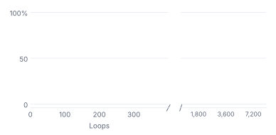
The loop in numbers
Without the loop, every step would need its own copy of the layer. The maze network would then need 306 layers and 3,259,341 weights for the longest test maze, rising to 834 layers and 8,867,229 weights for the largest 100×100 maze.
In the curve above, any shortest path counts. We verified the twice-the-path-length rule at every loop on all 1,000 training mazes, which is why the curve can count the test mazes whose path is complete. The runs at 1,800, 3,600 and 7,200 loops were checked in full.
The same holds when a trained looped model runs on the same problem. On reasoning chains of 1 to 8 steps, the chains network Claude wrote and the trained looped model from section 4 both loop once per input token by default. When the trained model runs twice as many loops, its accuracy slips from 69.1% to 66.7%. At four times, it falls to 49.2%. The network Claude wrote stays at 100% all the way to 128 times, which is about 1,500 loops on average. Not every trained looped model overthinks, though. Our trained looped graph search and parity models keep the same accuracy with extra loops.
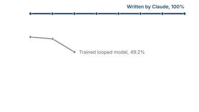
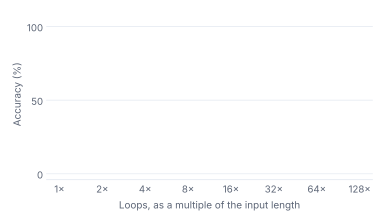
2. How it compares on Maze-Hard
Maze-Hard comes from the HRM paper (Hierarchical Reasoning Model). It has become a standard test for small models trained to reason by repeating a step many times, such as HRM, TRM (Tiny Recursive Model) and the Lattice Deduction Transformer (LDT). Most of its mazes have several equally short paths, of which the dataset marks one as the answer. The table below uses the LDT paper's scoring, where any shortest path counts.
| Model | Training | Solved (%) |
|---|---|---|
| Hand-written (19,936 weights, only 922 not zero) | None | 100.0 |
| LDT (1.8M weights) | 1K mazes, plus search when solving | 99.8 |
| TRM (7M weights) | 1K mazes | 91.9 |
| 1K mazes | 84.6 | |
| No maze training, tested on 50 of the test mazes | 26 | |
| No maze training, tested on 50 of the test mazes | 26 | |
| No maze training, tested on 50 of the test mazes | 12 |
Table 1. Maze-Hard results. A maze counts as solved when the answer is any shortest path from start to goal. Trained scores are from Davis et al. (NeurIPS 2026), Table 3, each the best version saved during training, picked by its test score. LLM scores are from their Table 25, run in October 2026 with no worked examples and reasoning effort set to high.
The written network tops the table. Frontier LLMs trail far behind, with none of the three that Davis et al. tested solving more than 26%. The trained looped models do much better, with LDT coming within 0.2 points at 99.8%. Yet LDT needs 90 times as many weights, a training set and a search at answer time, whereas the written network needed no training at all. The written network also holds up under the stricter scoring of the HRM and TRM papers, where only the dataset's own path counts. It still scores 100% there, while those papers report 74.5% for HRM and 85.3% for TRM.
Accuracy against size, stricter scoring, TRM's three scores, and a re-run check

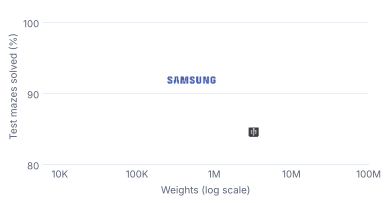
Attractor Models (Fein-Ashley and Rashidinejad, 2026) report 93.1 with 27M weights, trained on ~1K mazes. That paper doesn't say how it scores a maze, although its authors follow TRM's training protocol and report their number next to HRM's and TRM's reference-path scores.
Davis et al. retrained HRM and TRM and report each one's best score during training, measured on the test set. LDT's 99.8 is its strongest setting, trained on 512 shortest paths per training maze. LDT scores 99.0 when trained on one path per maze. Both are averages over 3 runs.
TRM shows up with three scores in this post. The 91.9 is from Davis et al., counting any shortest path, for its best version during training. The 85.3 belongs to the model its authors released, counting only the reference path. The 77.4 is our own training run in section 4, scored the same way.
A 30×30 maze uses only the first 30 rows of the network's row and column tables. A separate check re-ran the network on all 1,000 test mazes and on 500 freshly made ones, returning the reference path for every one. In earlier tests in the LDT paper, in April 2026, Claude Opus 4.6, DeepSeek V4-Pro and GPT-5.4 solved none of 200.
3. Why Claude can write the network but can't solve the maze
Perhaps Claude scores low simply because it doesn't approach the maze systematically. To test this, we added a paragraph to the LDT paper's prompt that tells Claude how to search, by spreading out from the goal one step at a time and then walking back from the start. That lifted its score from 13 to 24 of 50. We then varied one thing at a time, yet nothing pushed it past 25.
| On the paper's 50 test mazes | Shortest path found (of 50) |
|---|---|
| The paper's prompt (Davis et al., NeurIPS 2026) | 13 |
| Told how to search | 24 |
| Told how, one cell per token | 22 |
| Told how, answer with just the path | 25 |
| Told how, just the path, the maze as a list of cells instead of a grid | 19 |
| Writing a network, with testing (the network in this post) | 50 |
Table 2. Claude with better prompts. The first row is the paper's result for Claude Opus 5.5. The next four are our runs with the same model, with reasoning effort set to high, up to 100,000 output tokens and no tools. Each maze got one try, so a difference of a few mazes is noise.
Knowing the algorithm helps, then, but only so far. Tokenization isn't the culprit either, since giving Claude one token per cell made it no better (22 against 24). The real difficulty is carrying the algorithm out. Every step along the path has to be right, yet Claude's first wrong step comes a median 35% of the way along it, even when it is told how to search.
Writing the network demands something quite different. Claude does not run the search at all. Instead, Claude designs a single step of the search, deciding what each of a cell's 35 numbers means, which neighbour each head reads and how each number changes in one loop. It then sets the weights to do just that, leaving the loop to do the running. We think this division of labour plays to an LLM's strengths. The design rests on a handful of ideas, such as counting distance in threes, each of which can be checked on its own. When Claude solves the maze directly, by contrast, it needs a long chain of steps that must all be right.
Getting the design right did take testing. When we asked Claude for the whole network in a single answer, with no data, no tools and no way to test it, 9 of 10 tries ran out of output length before finishing. Even so, the try that got furthest had already settled on much the same design, counting in threes included. The one try that finished found a shortest path in all 1,000 test mazes, missing the dataset's reference paths only because it guessed a different tie-break. Claude wrote the network in this post while checking it against the training mazes. Those checks reshaped the design along the way, as the box below describes.
How the design changed
Claude had also written the task description it worked from. That description suggested a first design with two waves, one from each end. The waves used the position tables to find each cell's neighbours and marked every cell lying on some shortest path. The training answers revealed that the dataset expects one particular path. So the Claude writing the weights kept the neighbour lookups but rebuilt everything else, replacing it with one wave from the goal, counted in threes, pointers with a tie-break, and a chain from the start.
In the single-answer tries, the instructions did say how many loops our network runs.
4. Can training find these networks?
If a network of 20,000 weights can solve every maze, why don't trained networks of that size? Perhaps the architecture is the secret, in which case training would find the solution too if it had the same one. So we gave gradient descent the same starting point Claude had. We took the network Claude wrote, reset its weights to random, and trained it on the same 1,000 training mazes.
Every single run ended with 0% of mazes solved. As written, the network has no normalisation, which made all six of our first runs break down within 30 training steps. Once we added RMSNorm, training ran smoothly, but each network learned only to copy the maze back unchanged. Longer runs on six versions of the network, ranging from its own size up to 2.8 million weights with more loops, more layers per loop or up to 16 times the width, also ended at 0%. So did runs with a curriculum that started on 10×10 mazes and worked upward. After 8 hours each, none of them had solved a single maze of any size.
Copying turns out to be a trap. Path cells make up only about one cell in eight, so a network that simply copies the maze back already gets 87.4% of cells right. Every run ended at or just below that level, with none getting past 87.5%. To do any better, a network has to mark path cells. In the written network, though, a path cell is marked only after the wave has crossed the maze, which takes a chain of a hundred or more steps that each have to be right. Our guess is that gradient descent finds no partial credit along the way to follow.
A standard transformer does better, though not nearly well enough. We trained a plain transformer encoder the size of TRM (8 layers, 6.4 million weights, 320 times the network Claude wrote) on 3,000 mazes for 8 hours on one GPU. It got 94–99% of its training mazes right yet solved only 42% of the test mazes at best, levelling off for its final two hours. TRM itself, a looped model built for this benchmark, reached 77.4% when we trained it with its authors' recipe on one GPU. Figure 3 shows every run against training time.
Our runs used far less compute than the models built for Maze-Hard. Each of our first runs inside the network Claude wrote took about 5 PFLOPs, whereas training HRM, TRM and LDT took between 1,024 and 46,944 PFLOPs. These runs therefore show that gradient descent did not find these weights in our setup, without proving the weights unlearnable. Still, the contrast is hard to ignore. The architecture holds a solution that scores 100% with only 922 nonzero weights, yet training on the same data got nowhere near it.
How we trained the network Claude wrote
We fixed the plan before any training. Every run used the network's own tokenizer and 1,800 loops, AdamW, 3 learning rates × 2 seeds, and 40 minutes per run. A run counts as training if its loss stays finite and it beats copying the input on mazes it didn't train on.
With RMSNorm, the six runs got 87.2–87.4% of cells right, against 87.4% for copying the input. Each run took about 14,400 steps.
Every run in Figure 3, and why we didn't train them longer
The six versions in Figure 3 are the network Claude wrote at its own size (with 3 learning rates), with twice the loops, with 2 or 4 layers per loop, and at 4 or 16 times the width, each with normalisation added. Since the runs shared one GPU, Figure 3 places each one at its number of updates times its time per update with the GPU to itself.
Small mazes first. We also trained the 6 versions on mazes we generated in the Maze-Hard style, starting at 10×10 and working up to 30×30, then on the 1,000 training mazes plus 2,000 more of 30×30. A run moved up a size once it solved 90% of new mazes of that size, or after 45 minutes. All 111 checkpoints we scored on the test mazes sit at 0%.
The standard transformer has width 256 and 8 heads. It has no loop, so one pass fills in all 900 cells. It trained with a standard recipe (AdamW, learning rate 3e-4, batch 64), with nothing tuned, on the 1,000 training mazes plus 2,000 we generated in the same style. It solved 12.6% of the test mazes after 1 hour, 33.4% after 4, 42% at its best after 7, and 41.5% at the end. On 200 new mazes of the same style, it levelled off at 45%.
Why not train them longer? Five of the six versions got more updates than the 13,020 TRM needed to reach 77.4%, between 15,210 and 50,370. The sixth got 9,750, more than the 7,812 TRM needed to reach 53.9%. Nor was any of them slowly getting better. The standard transformer got 640,513 updates and was flat for its last two hours.
TRM is a different network, built for mazes, with 6.8M weights. Our 77.4% comes from our run of its recipe on one GPU instead of the authors' eight, counting only the reference path. The authors' released TRM gets 85.3% scored this way, still short of 100%.
Far beyond the sizes they were checked on
Mazes test whether training can find a solution at all. A second question is whether a solution keeps working as problems grow. We tested this on three simpler tasks where problem size is easy to control. While writing each network, Claude could check it only on small inputs, which we call its checking range. We trained standard networks on those same sizes, then tested both the written and the trained networks on much larger problems.
Graph search. The task is to find the shortest route from A to B on a map of one-way links full of dead ends and decoys, or to report that B cannot be reached. Claude checked its network on maps of up to about 12 points with routes of up to 4 steps. We then tested it on maps of up to about 48 points with routes of 8 to 16 steps, where it scored 100%. Trained networks up to 99 times bigger scored 0% on those routes, including one that scored 97.4% on the checking range. The written network tracks which points it can already reach from A. On every loop, each reached point passes that status along its outgoing links, so a longer route simply takes more loops.
Parity. The question is whether a string of 0s and 1s contains an odd or even number of 1s. Claude checked the written network only on strings of up to 20 bits, yet it is correct at every length we tried, up to 4,095 bits. The trained networks mastered the checking range but fell to chance (45.5–53.8%) on 21 to 128 bits.
Reasoning chains. Each problem is a set of shuffled statements such as x2 = x1 + 5. x0 = 7. x1 = x0 + 3., followed by a question about one variable. Extra chains that lead nowhere are mixed in, so adding up all the numbers does not give the answer. Claude checked the written network on chains of up to 8 steps, yet it is correct at 12, 16, 24 and 32 steps, and up to 63 in a harder extra test. The best trained network scored 93.7% within its training lengths but only 3.5% beyond them.
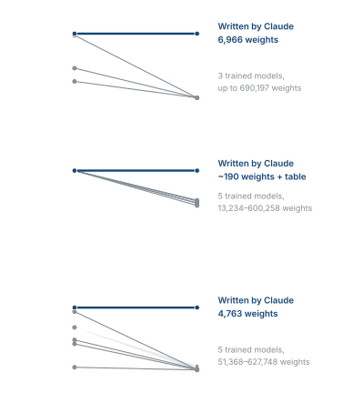

In all three tasks, the trained networks learn the sizes they see and stop there, whereas the written networks only need more loops. Trained transformers are well known to struggle with this kind of extrapolation, although special training recipes push parity much further (related work). The written networks show what is possible at the other extreme. Small looped networks can hold a solution that works at any size, given enough loops and a large enough position table.
The graph search table
| Model | Weights | Checking range | Test, paths 8–16 | Test, "unreachable" |
|---|---|---|---|---|
| Hand-written (looped) | 6,966 | 100 | 100 | 100 |
| Trained, looped | 26,561 | 25.6 | 0 | 98.3 |
| Trained, ~10× the hand-written size | 69,905 | 46.2 | 0 | 76.7 |
| Trained, ~99× the hand-written size | 690,197 | 97.4 | 0 | 98.3 |
Table 3. Graph search in full. Accuracy in %. The written network is three looped transformer layers with 6,966 weights, of which only 642 are not zero. The trained models were trained on the checking range, with their settings tuned and their best version kept. Each test was run once. The two smaller trained models fail to learn even the checking range well. The puzzles also have no shortcut, since no single clue in the input beats a baseline that guesses the most common answer by more than 1 point.
The full parity and chains tables, along with how those two networks work, are in appendix A.
5. The same recipe on other benchmarks
Beyond mazes, Claude wrote networks for eight more tasks from well-known benchmarks, most of them tasks where LLMs or trained models are known to struggle. The rest of this section explains what each network has to do and where a comparison needs care.
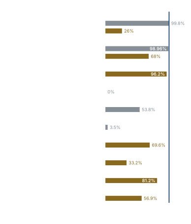
![Bar chart, one row per task, with a line at 100% for the written network, which scores 100% on every task. The bars show the strongest other result for each task. On Maze-Hard, LDT scores 99.8%, and Claude Opus 5.5 and GPT-6 Astra 26%. On Sudoku-Extreme, Sotaku v2 98.96%, and GPT-6 Astra 68%. On GraphWalks, Gemini 4 Carbon 96.2% F1. On graph search, a trained model 0%. On parity, a trained model 53.8%, where chance is 50%. On reasoning chains, a trained model 3.5%. On Boolean Expressions, SmolLM2-360M 69.6%, and on Dyck Languages, Pythia-410M 33.2%. On Web of Lies, Qwen3-235B-A22B 81.2%, and on Shuffled Objects, 56.9% with program synthesis.](figures/glance_base.svg)
Sudoku-Extreme, solved by guessing and backtracking
The maze network has no need to take anything back, because once the wave reaches a cell, that cell's distance is final. Hard Sudoku is different, since sometimes the only way forward is to guess. Sudoku-Extreme is the hard Sudoku benchmark from the HRM paper, also used by TRM and LDT. Each puzzle is a 9×9 grid with some digits filled in and a unique solution. Even the newest frontier LLMs solve only about half of them, with Claude Opus 5.5 solving 54% of the first 50 on its own.
The Sudoku network Claude wrote does what a person would do, except for all 81 cells at once. Each cell keeps a list of the digits it could still be. Three attention heads let it read its row, its column and its 3×3 box, so it can cross out digits already taken and spot a digit that has only one place left. When nothing more can be crossed out, the network has to guess. It first saves a copy of the whole grid in its own memory, then guesses a digit for the cell with the fewest options and carries on. Should the guess lead to a contradiction, such as a cell with no digits left, the network restores the saved grid, in which that guess is now ruled out. One step of this search takes a block of five layers, which the network runs for 40,000 loops with room for 24 saved grids.
The Sudoku network solved every one of the 141,040 test puzzles we ran, including the first 10,000 on which HRM, TRM and Sotaku v2 are scored. On those puzzles, the best trained model, Sotaku v2, reaches 98.96%. This reliability does cost compute. Because the network runs all 40,000 loops on every puzzle, it does about 50 times more arithmetic per puzzle than TRM, even though most puzzles are solved within the first few thousand loops.
The full comparison, computing per puzzle, and the search's limits
| Model and training | First 50 | First 10,000 |
|---|---|---|
| Hand-written (2,973,688 weights, only 17,014 not zero)No training | 100 | 100 |
| Sotaku v2 (800K weights)Trained on 2.7M puzzles | – | 98.96 |
| TRM (5M weights)Trained on 1K puzzles, plus rearranged copies | – | 79.5 |
| – | 55.4 | |
| 68 | – | |
| 54 | – | |
| 44 | – |
Table 4. Sudoku-Extreme results. Accuracy in %. A puzzle counts as solved when the answer matches its one solution. A dash means not run. Trained scores are from Davis et al. (NeurIPS 2026), Table 1, which scores the released HRM, TRM and Sotaku v2 models on the first 10,000 puzzles. Sotaku v2 (Lou, 2026) is a small recurrent transformer built for Sudoku. LLM scores are from their Table 25, run in October 2026 with no worked examples, reasoning effort set to high and up to 100,000 output tokens.
The network reads the puzzle as text, one character per token, and writes back the solved grid. Per puzzle, it does 21.7 trillion operations, against 0.22 trillion for HRM, 0.41 trillion for TRM and 4.6 trillion for LDT's 15 models, counted the same way as in Davis et al.
Each column covers the same puzzles in the same order, namely the test set's fixed order set by the LDT code. The first 31,104 puzzles we ran form an unbroken run from the start of the test set. We stopped the run after 141,040 puzzles to free the GPUs, by which point not one had failed. Because the LDT paper's own model was scored on the full test set, which we didn't run in full, we compare only on puzzles both sides were run on. In the LDT paper's April 2026 tests, Claude Opus 4.6, DeepSeek V4-Pro and GPT-5.4 solved none of 200.
On the 1,000 training puzzles, the search needs at most 5,585 loops and 13 saved grids, well within the 40,000 loops and 24 saved grids the network has. Before the test, the network itself was run once on 92 of the training puzzles, solving all 92. It writes the solution as one line of 81 digits instead of nine rows. Since the scoring ignores line breaks, this counts the same.
Tower of Hanoi, a million moves without a single mistake
Tower of Hanoi became a famous test of long reasoning after The Illusion of Thinking (Shojaee et al., Apple, NeurIPS 2025) showed reasoning models collapsing on it. When o3-mini, DeepSeek-R1 and Claude 3.7 Sonnet Thinking wrote out every move without tools, they began to fail at 7 to 8 disks, even when given the solution algorithm. The goal is to move a stack of disks from the first peg to the third, one disk at a time, with no larger disk placed on a smaller one. Each extra disk roughly doubles the number of moves. Twenty disks take 1,048,575 moves, any one of which can ruin the answer.
The Hanoi network Claude wrote outputs one move at a time, the way a language model writes text, feeding each move back in as input. Before every move, its attention reads the starting position and every move written so far, which tells it where each disk is now. The rest of the layer turns that position into the next move. Because the network works out the position from scratch at every move instead of keeping a running tally, errors have nothing to build up on. The network is a single looped transformer layer with 427,654 weights, of which only 3,686 are not zero. Claude checked it on up to 6 disks. On every size from 7 to 20 disks, a separate program replayed its moves and confirmed that every move was legal and the total was the fewest possible.
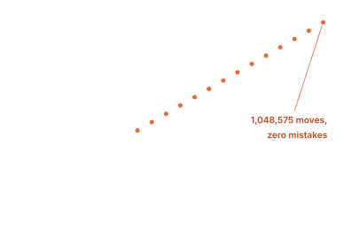

Tower of Hanoi needs no search, since each move is a simple decision, so the puzzle tests stamina rather than cleverness. Part of the debate around the Apple paper was whether the collapse came from output limits, to which the authors replied that the first errors appear early, around move 40 at 8 disks. LLMs can finish the puzzle when given help. With code execution, reasoning models solved every size they were tested on, up to 13 disks (Song et al., 2025). MAKER (Meyerson et al., 2025) solved 20 disks by asking an LLM for every move at least three times and voting on the answer, which took over 3 million LLM calls. The Hanoi network Claude wrote needs none of that. A single small layer makes every one of those moves itself, without a single mistake and without tools, votes or second attempts.
Checker Jumping, the second puzzle in the Apple study, tells the same story. Red and blue checkers sit in a row with one gap and must swap sides. They can only move forward, either by sliding into the gap or by jumping a single checker of the other colour. In the paper's tests, Claude 3.7 Sonnet Thinking and DeepSeek-R1 failed from about 3 checkers per side, while o3-mini on its high setting held about 50% or better up to 8 per side (read from the paper's figures). Although Claude checked its network only on boards of up to 3 per side, the network solves every size from 4 to 40 per side in the fewest possible moves, which comes to 1,680 moves at 40 per side.
Newer models, the network's limits, and Checker Jumping
Extra loops don't change the Hanoi network either. Running its layer 4 or 8 times per move instead of 2 produces the same moves.
Some newer models still fail early. In 2026 tests, o4-mini failed from 6 disks, while Qwen3-235B-Thinking fell to about 52% at 7 disks and 20% at 8 (Pushkin and Abbe, 2026, read from a plot).
The Hanoi network only moves the stack from the first peg to the third. When it starts from any other position, it does not finish. It needs 64-bit numbers, because with 32-bit numbers rounding errors could pile up over a million moves. Its context window, the number of tokens it can read, is sized so that 20 disks is the most it can handle.
Checker Jumping. The Checker Jumping network works like the Hanoi network. Its attention reads the board and every move so far, from which its layer computes the next move. It stops when no move is left. The network is built for boards of up to 40 checkers per side and has 10,008,568 weights, of which only 11,062 are not zero. Sizes above 15 per side lie beyond the Apple paper's range. In 2026 tests, GPT-5.2 at low effort fell below 20% from 9 per side and to about zero by 11 (Pushkin and Abbe, 2026, read from a plot).
GraphWalks, where the question sits in a million-token prompt
GraphWalks is OpenAI's benchmark for very long prompts. Each prompt lists one-way links between nodes, then asks which nodes lie at a distance of N steps from a given node. We used its longest set, 200 problems of 256k to 1M tokens, each up to about 1.75 million characters long.
The GraphWalks network works like the maze network, with links in place of cells. On every loop, one attention head lets each link check whether a link into its starting node has already been reached, so the reached area grows by one step per loop. At the end, every node at a distance of N steps from the start writes its own name into the answer. The network scores 100% (F1) on all 200 problems. On the same set, Claude Opus 5.5 scores 66.8%, while Gemini 4 Carbon, the best LLM in Google's published results, reaches 96.2%.
The catch is that the network reads only the format it was built for, meaning the benchmark's 10-character node names and its fixed question sentence, which every prompt in the benchmark uses. When we give it the same graph with 8-character names, it returns an empty answer, whereas an LLM would not care.
The full comparison and the network's size
| Model | F1 (%) |
|---|---|
| Hand-written (8,334,331 weights, only 7,777 not zero) | 100.0 |
| 96.2 | |
| 84.2 | |
| 71.8 | |
| 66.8 | |
| 65.0 |
Table 5. GraphWalks results. F1, the dataset's own score, compares the nodes in each answer with the true ones, averaged over the 200 problems. Each problem was run once. LLM scores are Google's self-computed runs, from its Gemini 4 Carbon announcement (28 October 2026).
The network is one block of 2 layers, looped 400 times, with nothing trained. The first layer has one attention head and 811 neurons, while the second has 12 neurons. Its 400 loops are enough for any N up to 397.
BIG-Bench reasoning questions, written in plain English
The last four networks read questions written in plain English and answer in text, just like an LLM. Two of the tasks come from BIG-Bench Hard (Suzgun et al.). Boolean Expressions asks for the value of an expression like not ( True and False ) or False, while Dyck Languages asks to close a sequence of brackets like [ { ( ) <. The other two come from BIG-Bench Extra Hard (Google DeepMind, 2025), which replaced each BIG-Bench Hard task with a much harder version once frontier models had mastered the originals. In Web of Lies, the model works out who is telling the truth from a long chain of claims. In Shuffled Objects, it tracks who holds what after many swaps.
Each network turns its question into something it can loop over. The Boolean network simplifies the expression one step per loop, much as you would by hand. The Dyck network adds up openers and closers to find how deep each bracket sits, then closes the most recent bracket that is still open, one at a time. In Web of Lies, each person's claim concerns someone else. On every loop, everyone whose subject is already settled works out whether they are telling the truth, so the answers spread along the chain of claims. Shuffled Objects uses a doubling trick from parallel computing. On every loop, each position merges its record of swaps with the record twice as far back, so after only a few loops the last position knows the outcome of all of them.
All four networks score 100%, both on the 250 official test items of each BIG-Bench Hard task and on all 180 test questions of each Extra Hard task. The Extra Hard results carry the most weight. There, the best LLM results we found are 81.2% on Web of Lies and 56.9% on Shuffled Objects, the latter achieved by having the model write and run a program. On BIG-Bench Hard, frontier LLMs already score above 90% (Kazemi et al., 2025), so we compare only with small open models and treat the result mainly as proof that the networks can read text.
As with GraphWalks, these networks understand only the wording they were built for, which comes from the public example questions, the benchmark paper's description and a few everyday words such as "swaps" and "trades". To confirm that they follow the rule rather than anything absorbed from the test set, we also ran the BIG-Bench Hard networks on 300 freshly generated questions per task, where they again scored 100%. The test questions sat on the same machine while the networks were being written, yet the session records show they were not opened.
The full comparisons, where each score comes from, and what the networks can read
| Model | Weights | Boolean Expressions | Dyck Languages |
|---|---|---|---|
| Hand-written (one network per task) | 183,856 / 58,695 | 100.0 | 100.0 |
| 361.8M | 69.6 | 23.6 | |
| 134.5M | 66.8 | 19.2 | |
| 405.3M | 52.0 | 33.2 | |
| 162.3M | 50.4 | 22.4 |
Table 6. BIG-Bench Hard results. BIG-Bench Hard, accuracy in %. For every model, an answer counts only if it matches the reference answer, ignoring spaces. Boolean chance is 50%. Only 6,756 of the Boolean network's weights and 8,491 of the Dyck network's aren't zero. Of the Boolean network's weights, 149,504 form a fixed lookup table of positions with 2,048 rows, which lets it read inputs of up to about 2,048 characters. Its looped block is two layers with 89 neurons.
| Model | Method | Reported | Web of Lies | Shuffled Objects |
|---|---|---|---|---|
| Hand-written | One network per task | Nov 2026 | 100.0 | 100.0 |
| Plain reasoning | Oct 2025 | 81.2 | 14.4 | |
| Program synthesis | Oct 2025 | 81.2 | 56.9 | |
| Plain reasoning | Oct 2025 | 38.8 | 8.1 | |
| Program synthesis | Oct 2025 | 52.5 | 34.4 | |
| Plain reasoning | Feb 2025 | 43.0 | 49.5 | |
| Plain reasoning | Feb 2025 | 29.5 | 6.0 | |
| Plain reasoning | Feb 2025 | 14.5 | 14.0 | |
| Random guess | Chance | Feb 2025 | 5.5 | 14.3 |
Table 7. BIG-Bench Extra Hard results. BIG-Bench Extra Hard, accuracy in %. "Plain reasoning" means the model reasons in text. "Program synthesis" means it writes a program that is then run. The question sets differ, so compare the scores loosely.
Our networks got 180 of 180 on each task, a score that a separate check confirmed by re-running both networks. The task's 20 public example questions are not counted. The Feb 2025 rows come from the BBEH paper (Kazemi et al.), on all 200 questions per task. The Oct 2025 rows come from Stein et al. (Tables C.2 and C.5), on a random 80% of each task's questions.
The Extra Hard networks read BBEH's fixed question templates. None of the extra everyday words they know appear in the test questions. The Shuffled Objects network assumes the options are listed in the order the objects were first handed out, as in every public example. Both networks need 64-bit numbers and a high-precision version of the step that turns attention scores into weights. With the standard library version, Web of Lies drops to 139 of 180. Web of Lies has 10,903,996 weights, of which only 44,550 are not zero. Shuffled Objects has 6,663,936, of which only 40,316 are not zero.
What's next
Two directions excite us most. The first is a single network for many tasks, in which the modules from this post live side by side while a hand-written router sends each input to the right one. The second is to use hand-written weights as a starting point for training. If training starts from a looped solution that already scores 100%, will it keep the ability to handle bigger inputs, or wash it out?
More broadly, our results suggest that for some problems, what holds small networks back is not their size but finding the right weights. An LLM that struggles with a problem can still write a network that solves it.
Weights and demo
Run the Maze-Hard network in your browser on 50 of the test mazes to watch every cell's numbers change loop by loop. The page checks every finished grid against the dataset's answer.
Run the Tower of Hanoi network in your browser. The page loads the network's weights and runs them with one generic loop, while a separate checker replays every move.
Citation
If you use this work, please cite it as follows.
@misc{elsayed2026written,
title = {{Hand-Written Looped Transformers That Beat Their Author}},
author = {Elsayed, Abdelrahman and Heakl, Ahmed and Shaker, Abdelrahman and Khan, Fahad and Khan, Salman},
year = {2026},
month = nov,
howpublished = {\url{https://python-arch.github.io/written-not-trained/}},
note = {Blog post}
}
The text, figures, animations, code and weights are all released under the MIT license.
Appendix
A. Parity and reasoning chains, in full
These are the full tables behind the parity and chains results in section 4, along with how the two networks work.
Read the appendix
How the networks solve them. The parity network keeps a running answer, odd or even so far, at every position. On each loop, every position updates its answer from the one before it. The chains network works the same way along a chain. Each statement looks up the statement that defines the variable it depends on, so one more link gets its value on each loop.
| Model | Weights | Checking range (≤ 20 bits) | Test (21–128 bits) |
|---|---|---|---|
| Hand-written (looped) | ~190 + table | 100 | 100 |
| Trained, looped | 50,434 | 100 | 53.8 |
| Trained, 1 layer | 50,434 | 100 | 52.6 |
| Trained, 4 layers | 13,234 | 100 | 49.2 |
| Trained, 8 layers | 101,858 | 100 | 49.5 |
| Trained, 12 layers | 600,258 | 100 | 45.5 |
Table 8. Parity in full. Accuracy in %. Chance is 50%. Only two trained models still reach 99% at 21 bits. None does at longer lengths. The hand-written network's looped part has about 190 weights, plus a table of positions that grows with the input (24,766 entries at 4,096 positions).
| Model | Weights | Checking range (≤ 8 steps) | Test (12–32 steps) |
|---|---|---|---|
| Hand-written (looped) | 4,763 | 100 | 100 |
| Trained, looped | 77,924 | 69.1 | 2.2 – 9.2 |
| Trained, 1 layer | 77,924 | 7.0 | 2.8 |
| Trained, 4 layers | 51,368 | 43.4 | 2.8 |
| Trained, 8 layers (~90× the hand-written size) | 427,812 | 93.7 | 3.5 |
| Trained, 12 layers | 627,748 | 49.6 | 4.0 |
Table 9. Reasoning chains in full. Accuracy in %. Each trained model got up to 60 minutes of GPU time. Several did not fully learn the checking range, so the cleanest comparison is the 8-layer model, at 93.7% on the checking range and 3.5% beyond it.
B. Arithmetic per maze
The maze network needs far less arithmetic per maze than any of the trained models.
Read the appendix

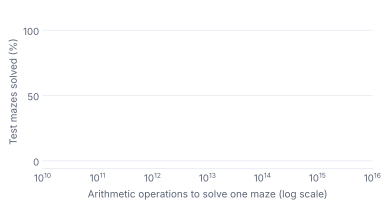
In this figure, every model's arithmetic is counted the way Davis et al. (NeurIPS 2026) count it, with any shortest path counting as solved. HRM and TRM use their usual 16 steps. LDT's rounds per maze aren't published, so its dots show the least a solve can cost, with the line running to its limit of 1,000 rounds. Trained scores are from Davis et al., Table 3, each the best version saved during training, picked by its test score.
C. A training-free fix for a pretrained looped model
As a side result, Claude worked out why Ouro-1.4B, a looped language model trained by others, gets worse when run for extra loops. It then stopped the decline without any training.
Read the appendix
Ouro-1.4B runs its 24 layers 4 times. It also has a built-in "am I done?" signal that it uses to decide when to stop looping.
The clock. Claude found the cause by reading the model's internal states. Ouro adds no start token, so its first token can only attend to itself. Loop after loop, that token's state therefore steps through a fixed sequence that every other token reads, like a clock. Past loop 4, the clock shows values outside the range Ouro saw in training.
The test. At each extra loop, we reset the first four tokens to their loop-3 state, which removes about 93% of the harm loop 5 does. When we pin them at their loop-4 state instead, the harm gets 2–4× worse, while rescaling every other token, as a control, does almost nothing.
The fix. The first few tokens are set on a schedule that keeps the clock in its trained range. The answer is then taken from a mix of loops, weighted by Ouro's own "am I done?" signal. Since the fix adds no new weights and changes none, Ouro's weights stay as trained, yet extra loops stop hurting.
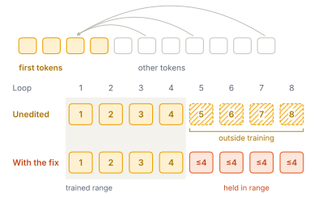
| Ouro-1.4B | Perplexity (lower is better) | ARC-Challenge | 3-step chains |
|---|---|---|---|
| 4 loops, as trained | 11.61 | 52.6 | 21 |
| 8 loops | 12.63 | 50.8 | 18 |
| 16 loops | 21.24 | 44.7 | 14 |
| 16 loops, with the fix | 11.54 | 52.1 | 20 |
Table 10. Ouro with and without the fix. Perplexity measures how well the model predicts real text, here on 200 test passages from wikitext-103, a standard collection of Wikipedia articles. ARC-Challenge is a set of science exam questions (test set, 1,172 questions, no worked examples). The chains are 100 3-step versions of the reasoning chains from section 4.
| GSM8K (500 problems, 8 worked examples) | 4 loops | 8 loops |
|---|---|---|
| 75.0 | 66.6 | |
| 77.2 | 75.2 |
Table 11. Ouro on GSM8K. GSM8K is a set of grade-school math word problems.
Uncertainty, and how this compares with STARS
The 95% confidence intervals at 8 loops are 75.2 [71.4, 78.8] with the fix and 66.6 [62.4, 70.6] without it. The 4-loop gain with the fix (77.2) comes from the answer-mixing step alone and is small enough that it could be noise.
STARS (ICML 2026) addressed the same decline in Ouro with extra training, whereas ours needs none. Our 4→8 drop without the fix is smaller than the one STARS reports (−8.4 vs −17.0 points), which suggests the two setups differ.
Good to know. This is stability, not a gain, since extra loops do not beat 4 loops on ARC or the chains. A natural next step is to keep the loop clock in range while training looped language models.
D. Related work
Earlier work on writing weights by hand or with LLMs, on compiled and hand-built networks, on trained models that handle bigger inputs, and on looped models.